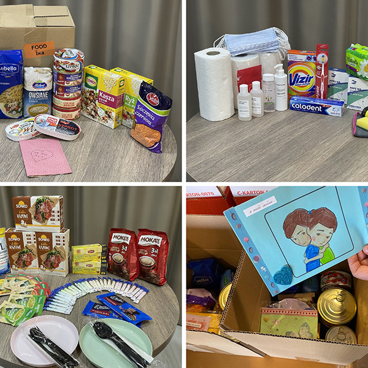
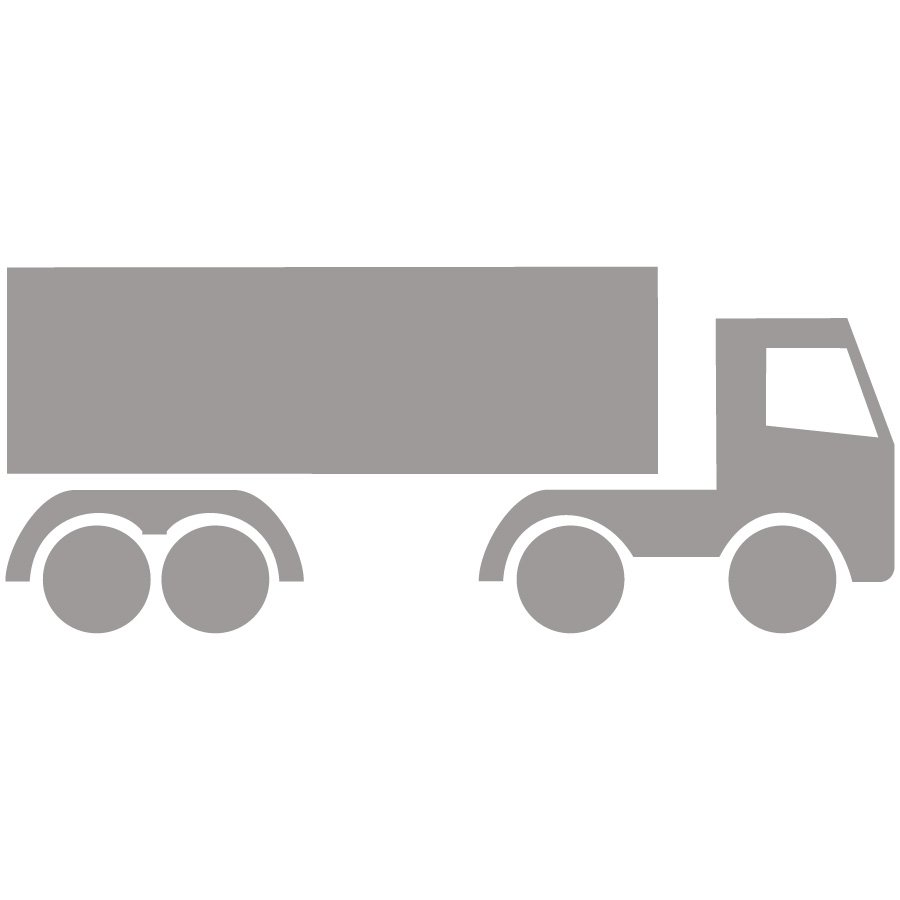

In these last days, we expect to “hear of wars and reports of wars.” (Matthew 24:6) Yet, when our brothers face distress due to these events, they receive the support they need. The 2022 Governing Body Update #3 provided heartwarming information about the ongoing relief work in Eastern Europe for those affected by war in Ukraine. How is this relief being provided even while war rages nearby? What effect have the relief efforts had on our brothers in Ukraine?
What Is Needed? How Is It Delivered?
On February 24, 2022, the day that war broke out in Ukraine, the Coordinators’ Committee approved a relief budget to assist our brothers in Ukraine. The Ukraine branch promptly began purchasing items locally and distributing them by means of the 27 Disaster Relief Committees it had appointed.
To supplement these efforts, work immediately began at the World Headquarters of Jehovah’s Witnesses to identify what practical support could be provided. The Coordinators’ and Publishing committees of the Governing Body asked the Global Purchasing Department to work with representatives from the Ukraine and Poland branch offices to address this need and develop a plan of action. Brothers from the Purchasing, Shipping, and Legal departments at each branch, a member of the Ukraine Branch Committee, and members of the Global Purchasing Department met daily to coordinate efforts.

Relief kits include food, hygiene products, and handmade notes of encouragement
“First, we had to identify what was needed,” relates Jay Swinney of the Global Purchasing Department. “We wanted to provide food and hygiene items that the local brothers would be accustomed to. However, determining what was needed was only one part of the problem. We also had to identify how to deliver these goods into Ukraine during wartime in the safest and fastest way possible.”
By March 9, 2022, the goods that were needed had been identified. Boxes of basic food items, such as canned meat and fish, groats, rice, and beans, would be provided along with basic hygiene items like soap and toilet paper. At the time, it was estimated that a four-week supply of these goods for one person would cost approximately $65 (U.S.). Considering that thousands of our brothers would likely be in need, the Coordinators’ Committee approved a substantial budget to provide this aid. But how could these goods be delivered without needlessly endangering our brothers’ safety?
On March 13, two brothers from Poland made a test delivery from the Poland branch office to a warehouse near Lviv, Ukraine. In the days before they left, branch personnel in Poland and Ukraine helped the two volunteers prepare for their trip. The branch completed the legal paperwork needed to cross the border to provide humanitarian aid, ensured that the brothers’ vehicles were clearly marked as providing aid, and coordinated with local brothers in Ukraine to determine the fastest route once the brothers crossed the border. With this good preparation and Jehovah’s blessing, relief aid was dispersed to the Disaster Relief Committees within 24 hours of its delivery to Lviv, and our brothers returned safely to Poland.
Even though the first test run was successful, the brothers delivered less than one metric ton (1 U.S. ton) of aid. An estimated 200 metric tons (220 U.S. tons) would still be needed! How could such a large amount be transported and distributed as quickly as possible?
“Your People Will Offer Themselves Willingly”
After reading reports on jw.org about how our brothers were being affected by the events in Ukraine, individuals from all over the world wanted to help. Many who were far away made monetary donations to the worldwide work of Jehovah’s Witnesses, knowing the funds would be put to the best use. Others who live in bordering countries were able to give of their time, energy, and personal resources to assist. Note just a few examples.
In Poland, willing volunteers assembled tens of thousands of care packages, and children drew handmade cards. “On many occasions I have read the verse at Psalm 110:3, where it states that Jehovah’s ‘people will offer themselves willingly,’” relates Bartosz Kościelniak, a member of the Purchasing Department at the Poland branch. “But seeing the outpouring of support firsthand, hundreds of volunteers willing to appear right away and ready to work, showed me the real truthfulness of these words.”
One of Jehovah’s Witnesses who owns an international logistics company and donated the use of his trucks as well as the fuel to operate them states: “For me, it is an opportunity to show my love for my brothers and for Jehovah. I am so glad I offered to help.” It is estimated that more than 7,700 liters (2,034 gal) of fuel were donated, and brothers used their time and energy to drive almost 48,000 kilometers (30,000 mi) to complete these deliveries!
With the willing and loving work of our brothers and sisters, by March 28—just 15 days after the first test delivery—100 metric tons (110 U.S. tons) of food, hygiene materials, and medical supplies had been delivered to Ukraine! And due to the generous donations of goods from our brothers and suppliers, the amount of dedicated funds that needed to be spent for these relief packages was substantially reduced. To date, Jehovah’s Witnesses have sent more than 190 metric tons (209 U.S. tons) of relief aid to Ukraine. What effect did these deliveries have on our brothers?
“They Also Contained Your Love!”
Once these packages arrived in Lviv, Disaster Relief Committees throughout Ukraine distributed them to those in need. Aid packages have been delivered to various cities, some more than 1,300 kilometers (800 mi) away from Lviv. While this work was done as efficiently as possible, it still took time.a
Markus Reinhardt, a member of the Ukraine Branch Committee, states: “During this crisis, many brothers have seen firsthand Jehovah’s love and the benefits of sticking close to the direction from his organization—even before a disaster strikes. As an example, all are encouraged to maintain a supply of several weeks’ worth of food and water in their homes. Regarding this direction, an elder named Anton serving in Kyiv said: ‘Jehovah’s organization has prepared us for critical situations, and we are thankful for that. Having a supply of food and water as well as a radio has literally saved our lives.’ We are so grateful that the brothers took this direction to heart because it gave the branch office time to organize the needed relief efforts.”
How did our brothers feel once this relief arrived? Mykola and Zinaida, who live in Kharkiv, expressed their thoughts in this way: “We are deeply touched by your concern. Thank you so much for the food and medicine. Certainly, the hand of Jehovah can be seen in this.” Valentyna lives in the same area. She said: “From the beginning of the war there were long lines for groceries. It was not always possible to buy what was needed. But Jehovah knew and saw this problem. He appointed brothers to distribute humanitarian aid to homes, and the packages contained exactly what was needed! In such difficult circumstances, when the situation seems hopeless, one feels and perceives the care of Jehovah and his organization in a special way. . . . It is very pleasant to feel his timely and much-needed help and support.”
Yevhen and Iryna, who fled from Mariupol, said: “We are very grateful for your care and support for our family. Believe us, it was very timely. You know, at first, we thought there were only products in these boxes, but when we opened them, we realized that they also contained your love!”
No doubt you can see how Jehovah’s spirit and direction were heavily involved in delivering this loving relief amid “wars and reports of wars.” Your kind donations to the worldwide work, many of which were made via donate.jw.org, also played an important role. Your generosity is greatly appreciated!
Providing Relief as Quickly and as Safely as Possible
February 24, 2022: Coordinators’ Committee approves a relief budget for Ukraine, which allows the branch to begin providing relief
February 24–March 8, 2022: The Ukraine branch purchases some materials locally and begins distributing them through Disaster Relief Committees. The branch office also prepares to receive and distribute goods from Poland
March 9, 2022: Coordinators’ Committee approves the delivery of humanitarian aid to Ukraine
March 10–12, 2022: Plans are made for a test delivery of food and supplies from Poland to Lviv, Ukraine
March 13, 2022: Test delivery of food and supplies is sent from Poland to Lviv, Ukraine
March 14–16, 2022: At an Assembly Hall near Poznan, Poland, Local Design/Construction volunteers are organized to assemble relief packages of food and hygiene materials

March 17, 2022: Four days after the successful test run, 13 metric tons (14 U.S. tons) of relief packages begin transit to the Ukraine border
March 21–27, 2022: Following the same pattern, remaining relief packages are assembled in Poland and sent to Ukraine and then distributed to the areas in need within 24 hours
March 28, 2022: Within 20 days after approval was given, 100 metric tons (110 U.S. tons) of food, hygiene items, and medical relief materials had been delivered into Ukraine
To date, Jehovah’s Witnesses have sent more than 190 metric tons (209 U.S. tons) of relief aid to Ukraine.